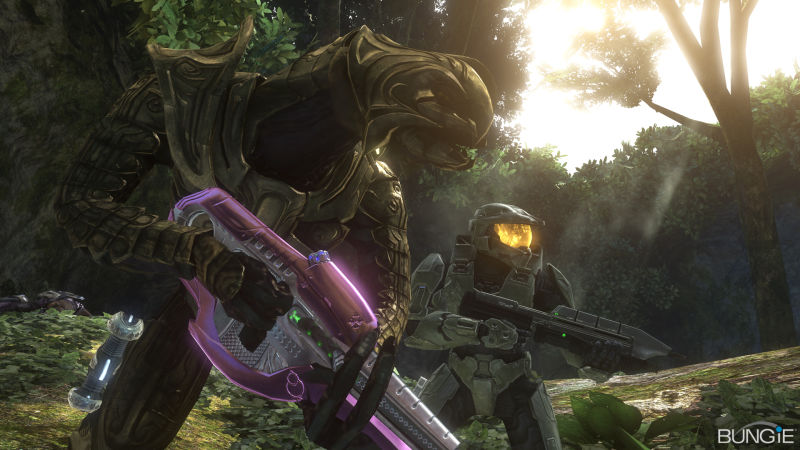

Halo 3 is the third game in the main Halo series. Like the rest of the series, it is a sci-fi/military-themed first-person shooter with an emphasis on vehicles and an extensive multiplayer mode in addition to the single-player campaign.
Bungie has taken its own brilliance and enhanced it in ways no one ever expected. Immaculate, flawless and immeasurably deep, Halo 3 online is the game everyone will be chasing until the now ex-Microsoft studio strikes again. And with over a million users online on the day of review, nothing's going to come close for quite some time. -Games TM